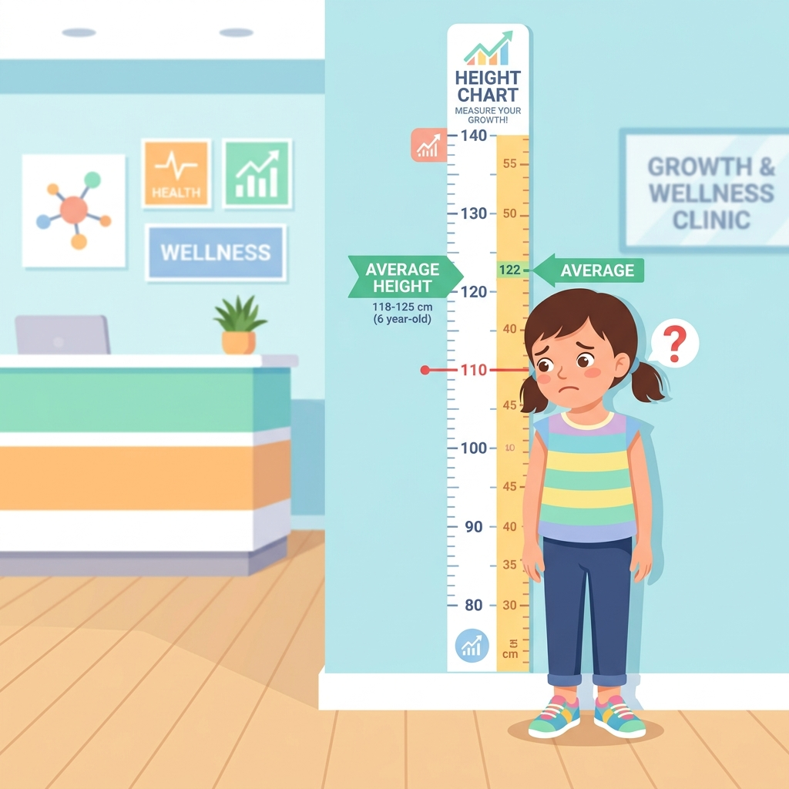

PHÁT TRIỂN CHIỀU CAO TỐI ƯU
Chủ đề: Chăm sóc sức khỏe bản thân | Tiết 2: Bác sĩ cộng đồng
"Nếu nhiều bạn chưa phát triển chiều cao tối ưu, chúng ta nên giúp cộng đồng thay đổi điều gì?"
KHỞI ĐỘNG
GAME: GIẢI CỨU CHIỀU CAO

Chuẩn Bị
Hình thức hoạt động
Hoạt động Cá nhân
Thẻ màu phản xạ
1 Thẻ xanh lá (🟢) + 1 Thẻ đỏ (🔴)
Ghi chép
Sổ tay Bác sĩ cộng đồng
Luật Chơi Cứu Trợ
1. Nhìn Tình Huống
Quan sát kỹ các thói quen xuất hiện trên màn hình.
2. Giơ Thẻ Chọn
Chọn 🟢 nếu thói quen có lợi | Chọn 🔴 nếu thói quen cản trở.
3. Giải Thích
Lập luận y khoa: Tại sao thói quen đó lại gây ảnh hưởng?
Phân Loại Thói Quen Sức Khỏe
🟢 CÓ LỢI CHO CHIỀU CAO
🔴 CẢN TRỞ CHIỀU CAO
Thông Điệp Bác Sĩ Cộng Đồng
BÁC SĨ BÁO CÁO CỘNG ĐỒNG:
Nhiều trẻ em trong cộng đồng xung quanh đang có những thói quen xấu làm cản trở chiều cao một cách thầm lặng mà không hề hay biết.
Nhiệm vụ của bác sĩ cộng đồng là khảo sát thực trạng, phân tích hậu quả sâu rộng và tổ chức tuyên truyền giúp thay đổi hành vi cho cả tập thể.
TIẾNG NÓI TRUYỀN THÔNG
Không chỉ tự thay đổi, chúng ta cần cùng cộng đồng thay đổi thói quen!
CHIẾN DỊCH PHÒNG BỆNH
KHẢO SÁT THỰC TRẠNG & PHÂN TÍCH NGUY CƠ
Chuẩn Bị
Hình thức
Nhóm y khoa 4 người
Dữ liệu lâm sàng
5 Bệnh án Tiết 1 + Phiếu phân loại nhóm
Ghi chép
Sổ tay Bác sĩ cộng đồng
Hướng Dẫn Khảo Sát Thực Trạng
CÁC BƯỚC KHẢO SÁT & HỘI CHẨN CỦA NHÓM:
- 1. Thu thập thực trạng: Xem lại 5 ca bệnh án (Minh, Lâm, My, Nhi, An) từ Tiết 1 để thống kê xem những thói quen xấu nào đang phổ biến nhất.
- 2. Phân loại 3 nhóm nguy cơ: Phân bổ các thói quen xấu vào đúng 3 nhóm: Thói quen dinh dưỡng, Thói quen giấc ngủ, Thói quen vận động trên Phiếu khảo sát.
- 3. Đánh giá hậu quả y khoa: Trả lời câu hỏi "Nếu duy trì thói quen này kéo dài thì sao?" cho cả tập thể.
- 4. Đề xuất khẩu hiệu: Chọn một thông điệp đanh thép để chuẩn bị chiến dịch tuyên truyền.
Dữ Liệu Khảo Sát Ca Lâm Sàng
Dữ liệu lâm sàng: Bạn Minh cao 115cm (thấp hơn chuẩn trung bình). Trưa nào Minh cũng đi học về muộn nên [bỏ bữa sáng]. Trong bữa trưa ở trường, Minh thường [không uống sữa tươi] và luôn [bỏ lại tôm, cua, cá] vì ngại bóc vỏ. Chiều về Minh thích ăn xúc xích rán cổng trường. Minh đi ngủ lúc 21h30 và thức dậy lúc 6h30 sáng hôm sau. Bạn rất thích tập võ và tham gia chạy bộ đều đặn 45 phút mỗi ngày cùng bố.
Dữ liệu lâm sàng: Bạn Lâm lười ăn rau nhưng ăn rất tốt các món thịt bò, trứng, thịt lợn. Lâm rất ghét uống sữa tươi vì thấy đầy bụng, bù lại Lâm thích [uống nước ngọt có ga và trà sữa] mỗi ngày. Hàng ngày, sau khi đi học về, Lâm thường [trùm chăn kín đầu xem iPad] đến 23h30 mới đi ngủ và thức dậy lúc 6h sáng hôm sau. Lâm [lười vận động], chỉ thích nằm một chỗ chơi game và ngại tham gia các giờ thể chất ở trường.
Dữ liệu lâm sàng: Bạn My có chiều cao bình thường. Sáng nào My cũng uống một hộp sữa tươi 180ml và ăn phở hoặc bánh mì cùng bố mẹ. Bữa trưa và tối My ăn uống đầy đủ các chất, đặc biệt là rau xanh và cá hồi. Tuy nhiên, My [rất lười vận động], đi học về là [ngồi lướt Tiktok, xem Youtube] đến giờ ăn cơm. Sau khi ăn tối, My tiếp tục ngồi học và [không chơi bất kỳ môn thể thao nào]. My thường đi ngủ lúc 22h00 và thức dậy lúc 6h30 sáng hôm sau.
Dữ liệu lâm sàng: Bạn Nhi có chiều cao thấp hơn bạn bè cùng lớp. Nhi rất [kén ăn, thường xuyên bỏ bữa] và mỗi bữa chỉ ăn nửa bát cơm với thịt nạc rán, hoàn toàn [không ăn tôm, cua, hải sản hay rau xanh]. Nhi rất ghét sữa tươi và chỉ uống nước lọc. Nhi [ngủ muộn], thường thức đến 23h00 để đọc truyện tranh. Nhi cũng [ngại vận động], không bao giờ chạy nhảy hay chơi thể thao vì sợ ra mồ hôi bẩn quần áo.
Dữ liệu lâm sàng: Bạn An đang ở độ tuổi phát triển mạnh nhưng chiều cao lại chững lại. An có thói quen [thức khuya đến 24h00] để ôn bài hoặc xem hoạt hình, sáng dậy lúc 6h00 rất mệt mỏi. Trong khẩu phần ăn hàng ngày, An [ăn ít đạm, không ăn cua cá] và [hoàn toàn không uống sữa] vì cho rằng mình đã lớn. An [ít vận động, chỉ dùng thiết bị điện tử] cả ngày nghỉ mà không ra ngoài tập thể thao.
Nếu Duy Trì Thói Quen Này Thì Sao?
Nếu duy trì thói quen dinh dưỡng xấu (bỏ ăn sáng, kén ăn, uống nước ngọt thay sữa)?
Click để xem phân tích y khoa cộng đồng...
➔ Xương thiếu hụt Canxi để hóa cứng xương chày và xương đùi. Thêm vào đó, axit phốt phoric trong nước ngọt có ga sẽ đào thải Canxi ra khỏi cơ thể qua đường tiểu, gây xốp xương, cản trở phát triển chiều cao vượt trội.
Nếu duy trì thói quen ngủ muộn (thức đến 23h00 - 24h00 để đọc truyện, chơi game, xem iPad)?
Click để xem phân tích y khoa cộng đồng...
➔ Bỏ lỡ đỉnh tiết hormone tăng trưởng GH ở giai đoạn ngủ sâu lúc 22h00 - 02h00. Nếu thức khuya đến nửa đêm, lượng hormone GH tiết ra từ tuyến yên sẽ giảm đi hơn một nửa, kìm hãm sự phát triển tế bào sụn đĩa tiếp hợp.
Nếu duy trì thói quen ít vận động, lười thể thao, nằm chơi điện tử?
Click để xem phân tích y khoa cộng đồng...
➔ Các khớp xương đầu gối và đùi bị dồn nén thụ động và lỏng lẻo. Thiếu lực tác động kéo - đẩy cơ học tuần hoàn từ vận động tích cực sẽ làm các đĩa sụn tiếp hợp ở đầu xương ngủ quên, không chịu phân bào kéo dài xương.
Bảng Đối Chiếu Nguy Cơ Y Khoa Cộng Đồng
| NHÓM THÓI QUEN | HÀNH VI LỖI PHỔ BIẾN | HẬU QUẢ LÂM SÀNG (NẾU DUY TRÌ KÉO DÀI) |
|---|---|---|
| 1. DINH DƯỠNG LỖI | Bỏ bữa sáng, kén ăn, ít đạm, không ăn cua cá hải sản, lười uống sữa tươi, thích uống nước ngọt có ga và trà sữa. | Thiếu hụt canxi & đạm xây cấu trúc khung xương. Axit phốt phoric trong nước ngọt có ga làm tăng đào thải canxi qua thận, gây loãng và xốp xương. |
| 2. GIẤC NGỦ MUỘN | Ngủ muộn, thức khuya đến 23h00 - 24h00 để học bài hoặc trùm chăn xem iPad/Youtube, đọc truyện tranh. | Suy giảm nghiêm trọng lượng hormone tăng trưởng GH tiết ra từ tuyến yên. Cản trở quá trình nhân đôi của các tế bào sụn tiếp hợp ở đầu xương. |
| 3. LƯỜI VẬN ĐỘNG | Ít vận động, ngồi lướt điện thoại, xem tivi cả ngày nghỉ, ngại tham gia thể dục thể thao hoặc vận động đổ mồ hôi. | Đĩa sụn tiếp hợp chây lì, không nhận được lực kích thích cơ học kéo giãn. Hạn chế lưu lượng máu mang canxi và dưỡng chất tới nuôi dưỡng đầu xương. |
Thông Điệp Vàng Bác Sĩ Cộng Đồng
3 CHÌA KHÓA MỞ KHÓA CHIỀU CAO:
🧱 DINH DƯỠNG (Viên gạch): Cung cấp canxi và đạm để đắp đắp cốt cứng cáp cho xương chày, xương đùi dài ra.
☀️ GIẤC NGỦ (Mặt trời): Ngủ sâu trước 22h tối để giải phóng lượng hormone sinh trưởng GH dồi dào từ tuyến yên giúp nhân đôi sụn tiếp hợp.
🧠 VẬN ĐỘNG (Lực kéo): Tập thể dục, chạy nhảy để kích hoạt co giãn các khớp xương co kéo, đánh thức các đĩa sụn sinh trưởng.
CAM KẾT CỘNG ĐỒNG
Bác sĩ cộng đồng hướng đến mục tiêu: 100% trẻ em xung quanh hiểu rõ tác hại của nước ngọt có ga, bỏ thức khuya, tập thể thao mỗi ngày.
THIẾT KẾ POSTER
THIẾT KẾ POSTER TRUYỀN THÔNG SỨC KHỎE
Chuẩn Bị Vẽ Poster
Hình thức
Nhóm y khoa 4 người (giữ nguyên nhóm)
Khổ giấy vẽ
Giấy vẽ khổ lớn A3 hoặc A2
Học liệu vẽ
Bút màu chì, màu nước, thước kẻ
Công Thức Thiết Kế Poster Đạt Chuẩn
1. VẤN ĐỀ (SAI)
Chỉ rõ thói quen cản trở chiều cao. Ví dụ: Ngủ muộn xem điện thoại, lười vận động, thích uống trà sữa/nước ngọt có ga.
2. HẬU QUẢ SỨC KHỎE
Cảnh báo hậu quả lâm sàng khoa học. Ví dụ: Thiếu hụt hormone GH, đào thải Canxi, đĩa sụn đầu xương chây lì không phát triển.
3. GIẢI PHÁP (ĐÚNG)
Đưa ra phác đồ hành động có định lượng. Ví dụ: Uống 500ml sữa, ngủ trước 22h00, chạy nhảy thể dục co giãn xương khớp > 45 phút.
Thẩm Định Chất Lượng Poster & Chấm Điểm
CHECKLIST KIỂM TRA HỢP QUY CHUẨN:
CHẤM ĐIỂM & GHI NHẬN XÉT:
Tiêu Chuẩn Poster Đạt Chuẩn Y Tế
ĐÁNH GIÁ CHẤT LƯỢNG TRUYỀN THÔNG:
Một poster truyền thông y tế xuất sắc không chỉ đẹp về mặt mỹ thuật, mà quan trọng hơn là phải thay đổi được tư duy và hành vi của người xem.
Hãy kiểm tra xem poster của nhóm mình đã có đủ các cảnh báo khoa học về đĩa sụn, hormone tăng trưởng GH, hay định lượng canxi từ sữa chưa nhé!
LƯU Ý LỖI SAI KHOA HỌC
Tránh đưa các phát biểu thiếu căn cứ khoa học lên poster. Hãy bám sát kiến thức y học lâm sàng ở Tiết 1.
NHẬT KÝ BÁC SĨ
NHẬT KÝ BÁC SĨ CỘNG ĐỒNG & BẢN CAM KẾT
Chuẩn Bị Sổ Tay Cá Nhân
Hình thức
Hoạt động Cá nhân độc lập
Sổ tay bác sĩ nhí
Sổ tay mini đã tự làm ở Tiết 1
Dụng cụ viết
Bút bi, bút mực, bút màu trang trí
Viết Nhanh Sức Khỏe
2 CÂU HỎI SUY NGẪM TRONG NHẬT KÝ:
- Câu hỏi 1 (Bài học cộng đồng): Thói quen xấu nào đang tàn phá sức khỏe và chiều cao của nhiều bạn bè xung quanh nhất mà em muốn giúp thay đổi?
- Câu hỏi 2 (Ý tưởng truyền thông): Slogan truyền thông nào của nhóm em thấy tâm đắc nhất và vì sao nó lại có sức lan tỏa mạnh mẽ?
GHI NHẬT KÝ NHANH:
Các bác sĩ hãy viết nhanh câu trả lời vào 2 trang tiếp theo của cuốn sổ tay mini y khoa. Dùng bút màu để làm nổi bật các từ khóa quan trọng liên quan đến canxi, giấc ngủ vàng, hormone GH.
Hoạt Động Nhỏ – Hiệu Quả Lớn
CLICK CHỌN PHƯƠNG ÁN CAM KẾT:
CHỮ KÝ BÁC SĨ CỘNG ĐỒNG
Hoàn Thành Nhiệm Vụ Bác Sĩ Cộng Đồng
CHÚC MỪNG CÁC BÁC SĨ CỘNG ĐỒNG!
Chúng ta đã xuất sắc nhận dạng thực trạng thói quen xấu của cộng đồng, phân tích những nguy cơ y khoa khoa học thầm lặng và hoàn thành xuất sắc bản phác thảo thiết kế Poster truyền thông thay đổi hành vi.
Ở Tiết 3, chúng ta sẽ bắt đầu chiến dịch tuyên truyền thực địa báo cáo kết quả và nghiệm thu chất lượng sản phẩm y khoa chuẩn của Academy.